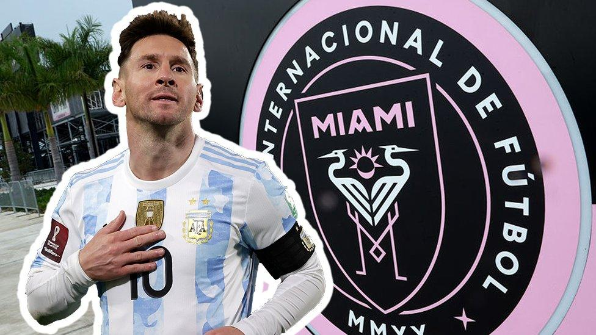
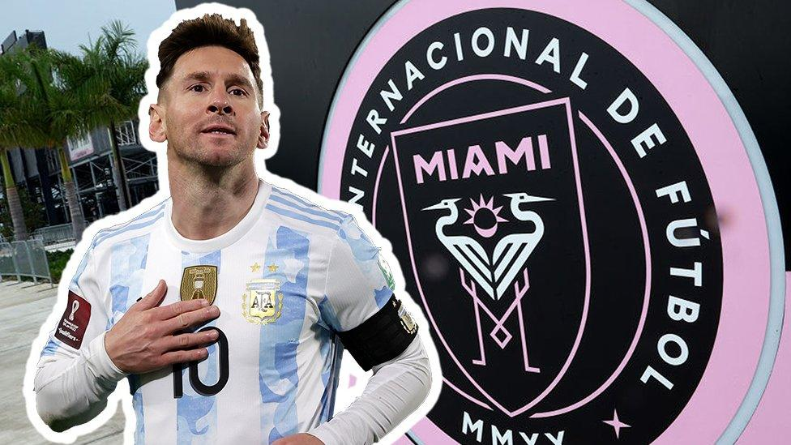
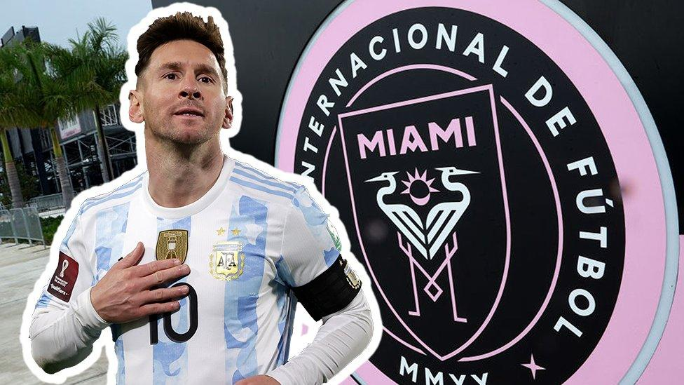
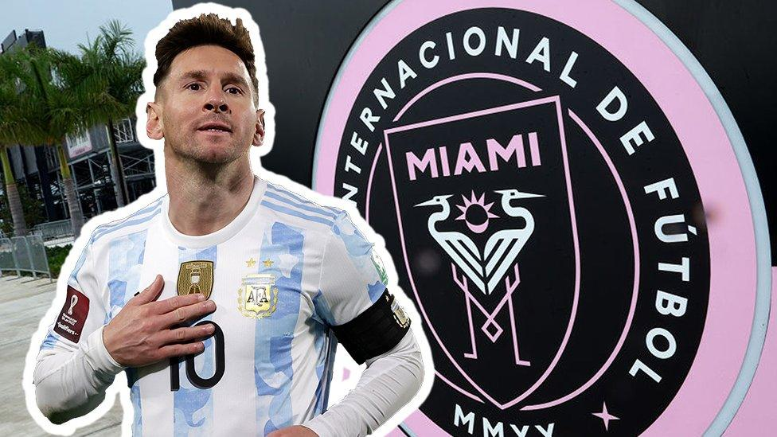

 

สาเหตุที่เป็นเช่นนั้นก็มีอยู่หลากหลายประการด้วยกัน เริ่มจากการที่เหล่าบรรณาธิการของ ฟรองซ์ ฟุตบอล และหนังสือพิมพ์ในประเทศฝรั่งเศส ผู้มีอำนาจในการคัดเลือกรายชื่อ นั้นมองว่ามีนักเตะคนอื่นๆ ทำผลงานได้ดีกว่า เมสซี่กดไป 22 ประตูกับอีก 13 แอสซิสต์จากการลงสนามทุกรายการให้กับ อินเตอร์ ไมอามี แต่ทว่าสิ่งหนึ่งที่ทำให้ตัวเลขดังกล่าวไม่ได้มีน้ำหนักให้พิจารณามากเท่าที่ควรก็คือการที่เวที เมเจอร์ลีก ซอคเกอร์ ของสหรัฐอเมริกา ไม่ได้มีความยากเท่ากับลีกใหญ่ๆ ในยุโรปถ้าให้พูดง่ายๆ ก็คือทีมงานผู้ที่มีสิทธิ์คัดสรรรายชื่อนักเตะ 30 คนสุดท้ายนั้นมองว่ามีนักเตะหลายคนทำผลงานได้ดีกว่า เมสซี แถมยังค้าแข้งในลีกที่มีการแข่งขันเข้มข้นกว่าอีกด้วย